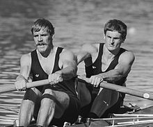
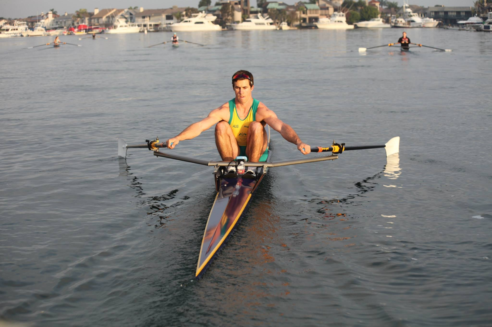
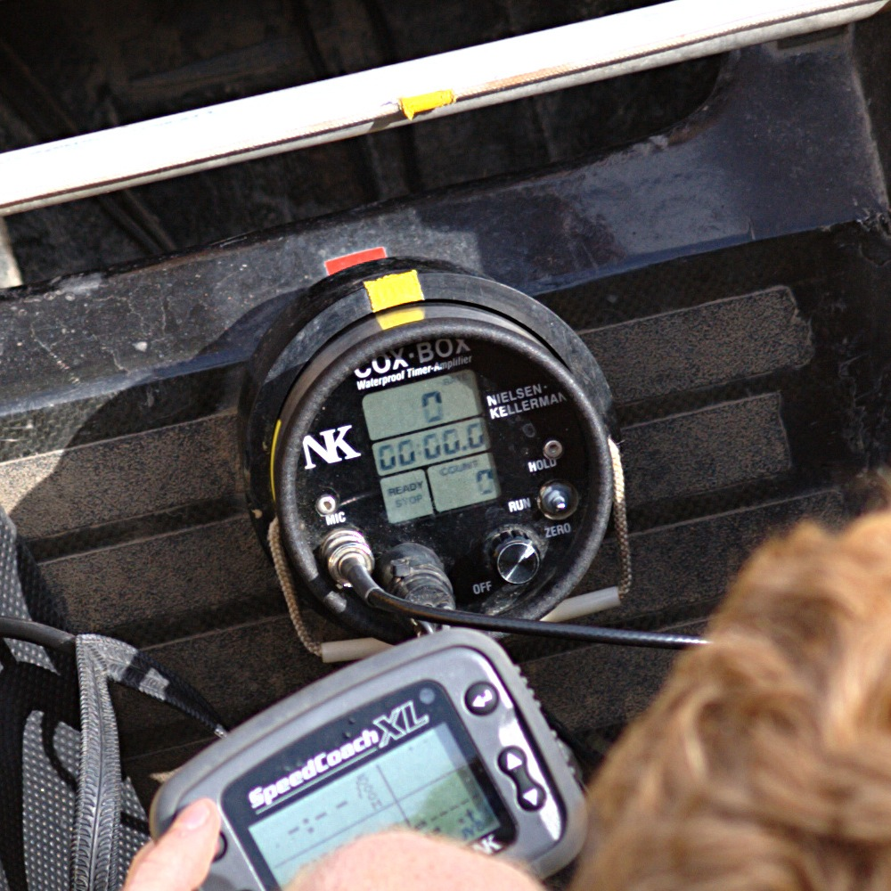
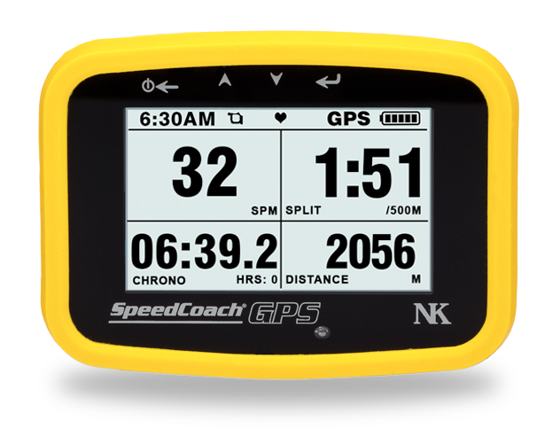
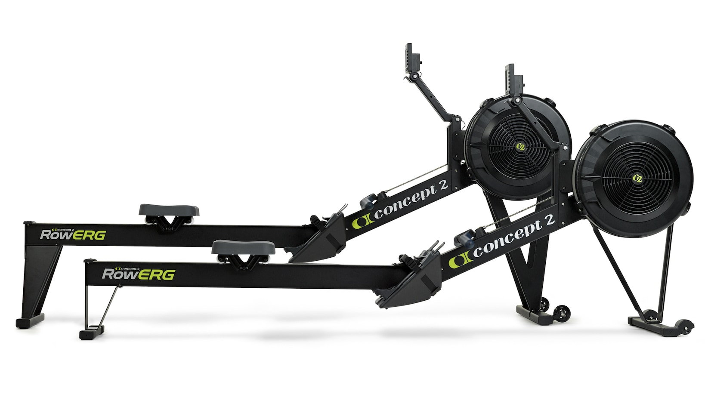

Equipment: An Overview
The expanse of equipment in the rowing world is seemingly endless. With this being said, equipment is very expensive due to the fact that there is a limited market and most products, if not all, are designed with precision.
Racing Shells
There are a number of different racing shells that vary in the number of people that are present in the boat at the time that the crew is on the water. The two main delineations are sweeping, which is when each person has one oar, and sculling, which is when each person has two oars. Typically, sweeping boats have a person coined a "coxswain" who has a primary job of steering and cheering on the crew as they travel down the race course.
8+: Eight. Sweeping boat consisting of eight rowers and one coxswain.
4+: Coxed four. Sweeping boat consisting of four rowers and one coxswain.
4-: Straight four. Sweeping boat consisting of four rowers with a bow seat to steer.
4x: Quad. Sculling boat consisting of four rowers with a bow steering.
2x: Double. Sculling boat consisting of two rowers with a bow steering.
2-: Pair. Sweeping boat (one of the hardest to maneuver) consisting of two rowers with a bow steering.
1x: Single. Sculling boat consisting of one rower.
| Boat | Sweep/Scull | # of People | Name |
|---|---|---|---|
| 8+ | Sweeping | 9 | Eight |
| 4+ | Sweeping | 5 | Coxed Four |
| 4- | Sweeping | 4 | Straight Four |
| 4x | Sculling | 4 | Quad |
| 2x | Sculling | 5 | Double |
| 2- | Sweeping | 2 | Pair |
| 1x | Sculling | 1 | Single |
Oars
There are two types of oars that directly correspond to the style of rowing. A number of companies produce oars and the price ranges anywhere from $500 to $700 per pair.
Where to purchase oars?
- Concept2
- Croker
- WinTech Racing
- Durham Boat Company
Sweeping Oars
A sweeping oar is utilized for boats like the eight, straight four, coxed four, and pair. Rowers have a singular oar which in size is larger than that of the sculling oar. The oar is designed to be utilized on either the port or starboard side of the boat.
Sculling Oars
Sculling oars are utilized for boats like the quad, double, and single. Rowers have two oars: one port in their left hand and one starboard in their right hand. These oars tend to be lighter in weight because the force placed on each one is smaller with comparison to the sweeping oar. They are also much shorter than the sweeping oar.
Technology
There are specific technological devices that can make the process of rowing easier. "Cox-boxes" and "stroke coaches" are also very important for those looking to either track their real-time numbers or progress over time.
Cox Boxes:
These are utilized by coxswains in sweeping boats. They have attributes of a stroke coach and function to amplify the voice of the coxswain over the entirety of the boat via connecting to a speaker system.
Stroke Coaches:
These function as a way for the "stroke" seat to accurately set the pace of the boat. It includes information relating to the split (time/500m distance), stroke rate (strokes per minute), distance per stroke, and overall time. They are quite costly but invaluable to the rowing community because of all of the information that they relay.
Megaphones:
Coaches primarily use megaphones as a way to communicate information to crews about the workout. Amplification of the coach's voice is crucial to the rapid passing of information.
Ergometer:
For many rowers, the ergometer is the most daunting aspect of the sport. For many teams, especially those in the Northeast region, the winter season is met with a switch from rowing on the water to rowing on the indoor rowing machines, also coined as "ergometers" or "ergs". They are crucial to the success of crews looking to stay in peak physical shape for the sport when they are not capable of safely navigating the water outside. The ergometer itself is sold by a number of manufacturers but is most commonly standardized by Concept2. The monitor tracks a number of different metrics similar to that of the stroke coach, most notably the number of meters rowed, the split per 500 meters, and the stroke rate in addition to the total time rowed. Additionally, these machines are utilized in college recruitment processes to tell how athletes perform off the water in applying their weight and strength.
